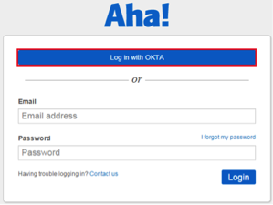

Generate the following IDP Metadata and save to a file named metadata.xml:
Done!
Notes:
IDP-initiated flows, SP-initiated flows, and Just In Time (JIT) provisioning are all supported.
For SP-initiated flows, go to https://<yourSubDomain>.aha.io/session/new and select Log in with Okta. Where <yourSubDomain> is your Aha! subdomain.
